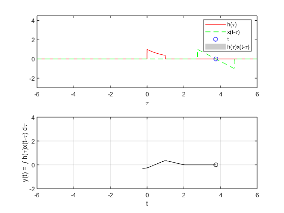
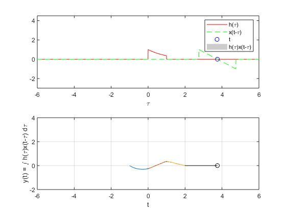
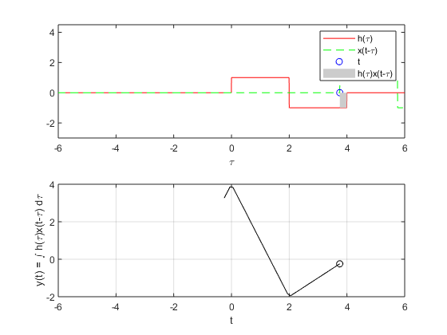
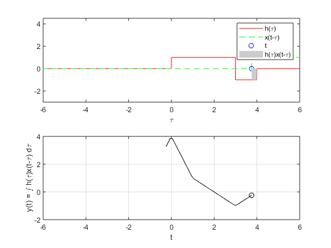
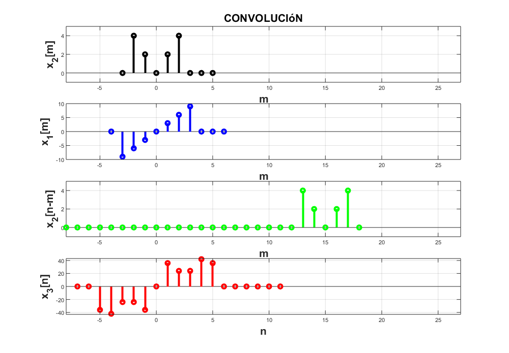
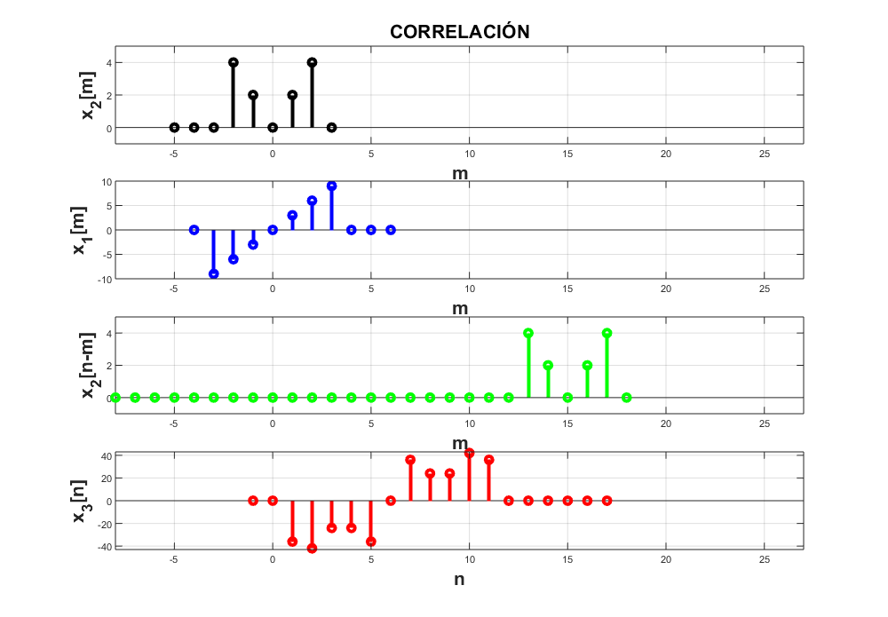
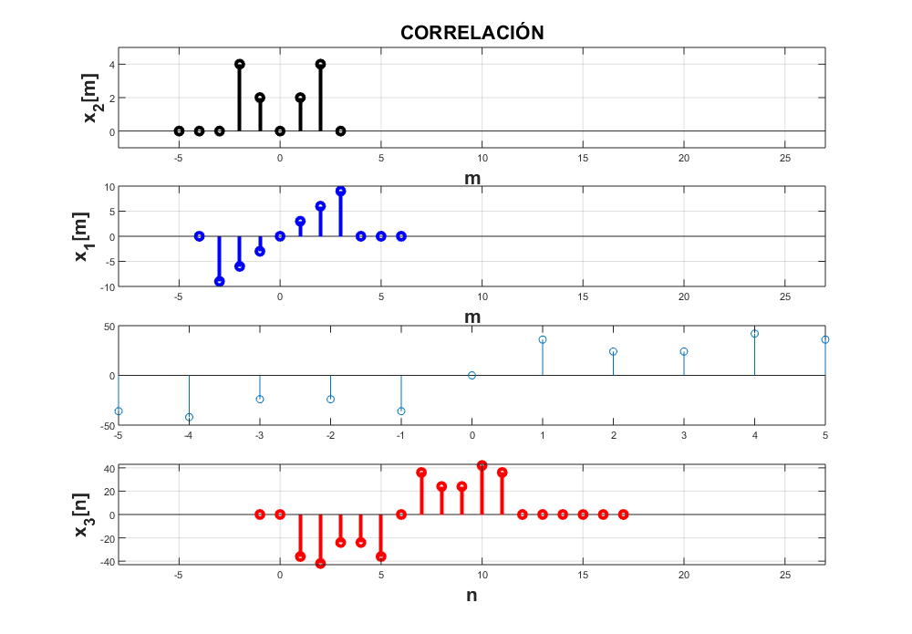

Práctica 4: Convolución y Correlación de señales en tiempo continuo
Contents
Portada
Intituto Politécnico Nacional
Unidad Profecional Interdiciplinaria en Ingeniería y Tenologías Avanzadas
Análisis de señales y sistemas
Práctica 3: Señales en tiempo discreto. Grupo: 2MV1
Profesor: Dr. Rafael Martinez Martinez
Integrantes:
Calva Lima Leonardo Ashley
Escarcega Corona Luis
Morales Sanabria Edgar Esteban
Objetivo
Los objetivos son los siguientes:
1) Conocer métodos básicos de integración numérica
2) Manipulación de instrucciones en MATLAB
3) Simular convoluciones y correlaciones de señales continuas
4) Simular convoluciones y correlaciones de señales discretas
Introducción
CONVOLUCIÓN
Dadas dos funciones sea x(t) y f(t) aquellas funciones sobre las cuales se aplicará la operación de convolución para generar una nueva función g(t) las diferentes notaciones indícan alguno de los distintos métodos para desarrollar la convolución de dichas funciones.
Notación 1
f(t)*x(t)=g(t); Donde g(t) es una nueva función en el dominio del tiempo.
Notación 2
g(t) = @(t) (f(t)*x(t-T))
g(t) = @(t)integral(g(t),T,-inf,inf) La convolución también puede ser escrita mediante un producto de las funciones dentro de una integral
definida con limites desde menos infinito hasta infinito. En ambas funciones se aplica un cambio de
variable sobre el cual se integrará; así mismo se aplica una inversión horizontalmente a una de las
señales y se aplica un desplazamiento horizontal con la variable original.Métodos de resolver la convolución.
Dicho esto es posible entonces a partir de la integración obtener dos métodos de visualizar la gráfica resultante de la convolución de dos señales. El primer método consiste básicamente en resolver la integral evaluado los límites respecto del dominio de la función donde el cambio de variable no contiene traslación. Este método suele ser el más complejo debido al desarrollo de las integrales y los respectivos límites a evaluar.
El segundo método es llamado el método "Gráfico" debido a que para este se inicia graficando ambas señales con algunos cambios sobre las gráficas de las señales será posible hallar los límites de integración sin realizar la misma cantidad de integrales que en el método analítico. El segundo paso es aplicar un cambio de variable f(t)=f(T) a una de las señales; donde T es la nueva variable sobre el eje horizontal. A esta función se le "Fija" sobre el eje horizontal, o en otras palabras solo se grafica tal cual está definida sin realizar algún otro cambio.
A la segunda señal se le aplica el cambio de variable x(t)=x(-T) lo cual se puede interpretar como una inversión horizontal de la señal. Posteriormente para que ambas señales generen una nueva señal la señal x(t-T) es desplazada al asignarle valores a la variable t entre un intervalo que incluya el dominio de la función f(T). De esta manera la integral resultate será, dependiendo de la naturaleza de las funciones, una integral que se podrá dividir en una suma de integrales con distintos límites de integración. La función resultante de esta suma resultante de integrales pertence al espacio del tiempo al ser evauada y es llamada g(t).
CORRELACIÓN
Dadas dos funciones sea x(t) y f(t) aquellas funciones sobre las cuales se aplicará la operación de correlación para generar una nueva función g(t) las diferentes notaciones indícan alguno de los distintos métodos para desarrollar la convolución de dichas funciones.
Notación 1
f(t)°x(t)=g(t); Donde g(t) es una nueva función en el dominio del tiempo.
Notación 2
g(t) = @(t) (f(t)*x(t+T))
g(t) = @(t)integral(g(t),T,-inf,inf)Dadas las formas matemáticas descritas anteriormente, es posible intuir a simple vista la similitud entre la convolución y la correlación en las Notaciones número 2; dicho lo anterior se infiere que la correlación se puede llegar a resolver mediante las dos técnicas antes descritas de convolución. Esto es, operando sobre una de las variables un cambio de variable, pero sin inversión, y un desplazamiento.
Problema 1
Para el PR04 reporte la grafica de la simulación númerica de la convolución y compare con el resultado análitico que obtuvo para el problema 1, esto es, su práctica tendrá que incluir una llamada a la funciónn convconm y posteriormente se tendrá que mostrar (mediante el Publish) la gráfica tanto de las señales involucradas como el resultado de la convolución, y en esta última gráficara su resultado analitico, se tendrá que incluir el resultado analitico.
Se tienen las siguientes señales f(t) y x(t) en la gráfica 1; la convolución analítica y así como utilizando un software convconm para una aproximación numérica en la gráfica 2.
c = @(t) t.*(t>=-1&t<1);
v = @(t) exp(-t).*(t>=0&t<1);
convconm(c,v)
hold on
 Código de la función g(t) generada analíticamente se mira en colores azul, naranja y amarillo contra el gris del código del software.
fplot(@(t) (t+2*exp(-t-1)-1),[-1 0])
fplot(@(t) ((2-t)*exp(-1)+t-1),[0 1])
fplot(@(t) ((2-t)*exp(-1)),[1 2])
hold off
 Problema 2
Para el PR05 reporte la grafica de la simulación númerica de la correalción y compare con el resultado análitico que obtuvo para el problema e), esto es, su práctica tendrá que incluir una llamada a la funciónn convconm y posteriormente se tendrá que mostrar (mediante el Publish) la gráfica tanto de las señales involucradas como el resultado de su correlación, y en esta última graficara su resultado analitico, se tendrá que incluir el resultado analitico.
Problema D
x = @(t) 1*(t>=0 & t<2)-1*(t>=2 & t<4); h= @(t) -1*(t>=-4 & t<-2)+1*(t>=-2 & t<0); convconm(h,x)
Problema E
y = @(t) 0*(t<0)+1*(t>=0 & t<3)-1*(t>=3 & t<4); i= @(t) -1*(t>=-4 & t<-3)+1*(t>=-3 & t<0); convconm(i,y)
Problema 3
Realice la simuación de la convolución de las señales (c) con (d) del problema 3.1.1
Para esta simulación se utilizará un software visto en clase.
n= -4:6; m= -3:5; j= [0 -9 -6 -3 0 3 6 9 0 0 0]; k= [0 4 2 0 2 4 0 0 0]; convdisc([n;j],[m;k])
Problema 4
Realice la simuación de la correlación de las señales (c) con (d) del problema 3.1.1
Para esta simulación se utilizará el mismo software solo que se hará una modificación para que en el título de las gráficas indíque que es la "CORRELACIÓN" y no la "CONVOLUCIÓN".
n= -4:6; m= -3:5; j= [0 -9 -6 -3 0 3 6 9 0 0 0]; k= [0 4 2 0 2 4 0 0 0]; corrdisc([n;j],[-m;k])
Problema 5
Realice la la convolución de las señales (c) con (d) del problema 3.1.1 utilizando el comando conv de MATLAB, muestre el código utilizado y gráfique el resultado, sugerencia: Utilice las propiedades de traslación de la convolución.
c=[-9 -6 -3 0 3 6 9]; d=[4 2 0 2 4]; n=conv(c,d); u=[-5 -4 -3 -2 -1 0 1 2 3 4 5]; stem(u,n)
Referencias
Dr. Rafael Martinez Martinez. (2016). Se ?nales y Sistemas. 2018, de creativecommons.orgSitio web: http://rafneta.github.io/